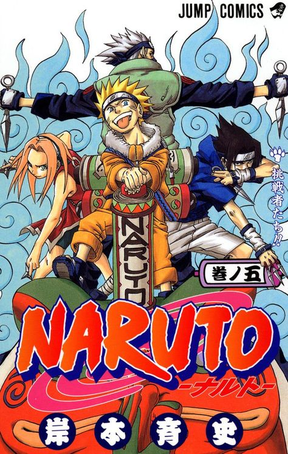
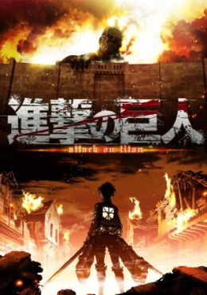
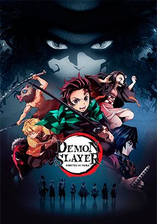
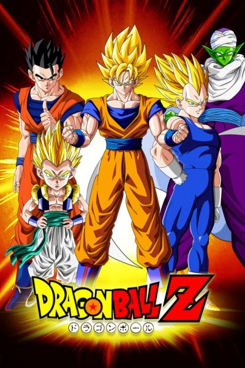

Esta es una lista de los mejores animes de las ultimas décadas:
| Nombre | Año de Estreno | Descripción | Imagen Promocional |
|---|---|---|---|
| One Piece | 1999 | Una historia épica de piratas, donde narra la historia de "Monkey D. Luffy" quien cuado tenia 7 años, comió accidentalmente una "Akuma no mi"(Futa del diablo) la cual le dio poderes de goma. Por otra parte "Gol D. Roger" conocido como "El rey de los Piratas" quien fuera ejecutado por la Marine, habló antes de morir, acerca de su famoso tesoro "One Piece" escondido en la "Gran line". Esta noticia desato la gran era de la piratas lanzando a incontables piratas a ese lugar, en busca de "One Piece" el tesoro perdido. Diez años después, Luffy inspirado en "Gol D. Roger" y un pirata de nombre Akagami no Shanks (Shanks el pelirrojo) se convierte en pirata deseando ser el próximo "Rey de los Piratas" y zarpar para conocer amigos y tener aventuras con ellos, teniendo como meta encontrar el "One Piece". | |
| Naruto | 2002 | Naruto, un aprendiz de ninja de la Aldea Oculta de Konoha es un chico travieso que desea llegar a ser el Hokage de la aldea para demostrar a todos lo que vale. Lo que descubre al inicio de la historia es que la gente le mira con desconfianza porque en su interior está encerrado el demonio Kyubi que una vez destruyó la aldea, y que el anterior líder de la misma tuvo que encerrar en su cuerpo siendo aún muy pequeño, a coste de su vida. Aunque sus compañeros no saben esto, tampoco le aprecian porque es mal estudiante y siempre está haciendo bromas. Sin embargo, la forma de actuar y la determinación de Naruto demuestran a los demás que puede llegar muy lejos, y el recelo de los otros chicos se va disipando. Naruto y sus compañeros Sakura y Sasuke, junto a su maestro Kakashi tendrán que enfrentarse a una serie de combates y misiones a lo largo de la historia que les permitirán mejorar y crecer. Naruto se vera enfrentado a sus principales enemigos Akatsuki, Itachi y Kisame. |  |
| Shingeki no Kyojin | 2013 | La historia nos traslada a un mundo en el que la humanidad estuvo a punto de ser exterminada cientos de años atrás por los gigantes. Los gigantes son enormes, parecen no ser inteligentes y devoran seres humanos. Lo peor es que parece que lo hacen por placer y no por alimentarse. Una pequeña parte de la humanidad ha conseguido sobrevivir protegiéndose en una ciudad con unos altísimos muros, más altos que el mayor de los gigantes. La ciudad vive su vida tranquila, y hace más de 100 años que ningún gigante aparece por allí. Eren y su hermana adoptiva Mikasa son todavía unos adolescentes cuando ven algo horroroso: un gigante mucho mayor que todos los que la humanidad había conocido hasta el momento está destruyendo los muros de la ciudad. No pasa mucho tiempo hasta que los gigantes entran por el hueco abierto en el muro y comienzan a devorar a la gente. |  |
| Kimetsu no Yaiba | 2019 | Estamos en la era Taisho de Japón. Tanjiro, un joven que se gana la vida vendiendo carbón, descubre un día que su familia ha sido asesinada por un demonio. Para empeorar las cosas, su hermana menor Nezuko, la única superviviente de la masacre, ha sufrido una transformación en demonio. Destrozado por los acontecimientos Tanjiro decide convertirse en un cazador de demonios para poder devolver a su hermana a la normalidad y matar al demonio que masacró a su familia. |  |
| Dragon Ball Z | 1989 | En Dragon ball Z Goku se ha convertido en un adulto y está casado con Milk, con la que tiene un hijo llamado Gohan. En esta segunda saga de Dragon ball Goku descubrirá que no es un terricola, sino que pertenece a una raza de guerreros conocida por ser una de las más poderosas de la galaxia, para posteriormente dar paso a los verdaderos enemigos de la serie. Para poder vencer a los nuevos enemigos que irán surgiendo, Goku y sus amigos tendrán que viajar por otros planetas e incluso al cielo y al infierno. Cada enemigo será más fuerte que el anterior, por lo que tendrán que entrenar muy duro para poder derrotarlos además de que se les irán uniendo nuevos personajes que les ayudarán a vencerlos. |  |